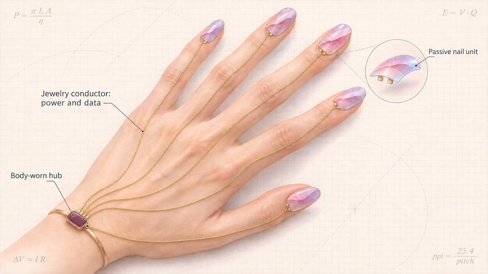
The Nail That Carries No Battery
Passive fingernail displays powered and driven through jewelry: design, an open power and data budget, and the limits of a screen worn on a fingernail
Abstract
A screen on a fingernail has been shown in the laboratory and proposed many times in patents, yet it has not become a product. The usual design puts the whole device on the nail: display, battery, radio and controller. This paper describes a different arrangement, developed under the name Living Nails. Each artificial nail carries only a thin display and a few electrical contacts. It has no battery and no radio. A fine conductor, which can be styled as a gold chain, carries both power and image data to it from a body-worn hub: a finger ring, a wrist band, or several linked rings that hold the battery, the Bluetooth radio, the controller, a motion sensor and a vibration motor. When the fingers curl so the nails line up, the hub can split one line of text or one image across them as a single moving display.
We give a small, open model of what this asks of the hardware. One hand offers about 5 cm² of display: 76,614 pixels at 300 pixels per inch, or 489 if the nails are tiled with 1 mm addressable LEDs. An emissive thumbnail at an indoor brightness draws about 1.5 to 3.5 mW, and an electronic-paper nail changing its image 30 times an hour draws under 0.05 mW. A battery that fits under a nail holds about 5 mWh and runs an always-on emissive nail for 1.7 hours; a ring holds about 29 times as much and a bracelet about 286 times. A bracelet runs five always-on nails for about 140 hours, but a single ring runs them for only 14 hours, and at showroom brightness for 3. The conductor itself costs almost nothing: under 30 mV of drop and under 1% loss in the worst case. The limits are elsewhere. Live 30-frame video for one hand would need 9 to 37 times what a Bluetooth link carries, so animation must be stored or generated in the hub. Strings of standard addressable LEDs, one of the disclosed wiring schemes, draw far more at idle than they spend on light. Electronic paper is too slow for a smooth scrolling marquee.
No prototype exists. Every number comes from a published model with stated assumptions, and the paper ends with the tests that would confirm or refute it.
Keywords: wearable displays, fingernail display, smart jewelry, micro-LED, OLED, electronic paper, power budget, body-worn hub
- 1. Introduction
- 2. Related work
- 3. The system
- 4. How much screen a nail holds
- 5. What a nail display draws
- 6. The battery budget
- 7. Why the battery leaves the nail
- 8. The conductor
- 9. Data: radio, wire and daisy chain
- 10. One display across four nails
- 11. Gestures, alerts and heat
- 12. Limitations and evaluation plan
- 13. Conclusion
- References
1. Introduction
Nail decoration is static. Polish, gel and press-on nails fix one look until they are removed. A display on the nail would let that look change with clothing or mood, animate, or carry a short message. The idea is old enough to have a research literature. A colour screen was mounted on a fingernail as an always-available display in 2013 [1]. Battery-free electronic-ink nails that update when tapped against a phone followed in 2017 and 2018 [2, 3]. Patents describe nails with electronic paper, a battery and a Bluetooth receiver on board [4], and a granted claim recites a fingernail display with its own wireless controller and power source [5].
None of these has become an everyday product, and the reason is easy to state. A fingernail is about a square centimetre and a fraction of a millimetre thick. Into that space the self-contained design must fit a display, a battery, a radio, a controller and some way to charge, and do it ten times, once per finger. The battery is the binding part. A cell thin enough to hide under a nail stores very little energy, and ten of them must each be charged.
The system described here, Living Nails, removes the battery and the radio from the nail altogether. Each nail is a passive display with electrical contacts. Power and image data both arrive over a conductor from a hub worn on the body, where there is room for a real battery and a USB-C port. The conductor can be ordinary wire, but it can also be a piece of jewelry: fine insulated wire inside a hollow gold chain whose metal body is the return path and a shield. A magnetic clasp can be both the fastener and the electrical connector.
The questions we address are practical. How much display does a nail offer, and at what pixel count? How much power does it draw for each display technology? How long does a ring or a bracelet keep it running, and how does that compare with a battery on the nail? Does the thin conductor waste power or corrupt the signal? Can the radio keep up? Is a line of text across four nails readable? We give a small model for each, publish it, and say where the answers are unfavourable.
2. Related work
Displays on the nail. NailDisplay mounted a small colour screen on a fingertip to study an always-available display, with the electronics tethered off the finger [1]. AlterNail [2] and AlterWear [3] made electronic-ink nails and other wearables with no battery: an NFC reader, typically a phone, powers the display briefly and writes a new image, which the bistable ink then keeps without power. Patent proposals mostly integrate everything on the nail. Q-Tee describes artificial nails with an electronic-paper display [4]; Magnusson claims a fingernail display with its own wireless controller and power source [5]; Piccionelli describes a finger computer display and controller device whose nail display carries its own processor and signal receiver, powered by a small battery or, in some forms, by a glove or band worn on the hand [6].
Nails driven through contacts. Two proposals feed a passive nail through contacts. Kent Displays describes bistable colour-changing artificial nails re-coloured by plugging the nail tip into a separate device [7]. Nailtron describes an output device built into a smartphone cover, with a groove whose terminals send colour data to an electronic-paper nail [8]. In both, the source is a handheld appliance that the nail visits, not a hub worn on the body that drives the nail continuously.
Power and data on one pair, and power through jewelry. Sending power and data to a remote display over the same wire pair is an old technique in signage [9]. A charm bracelet that distributes battery power along conductive rails to LED charms carries power but not images [10]. A necklace loop that sends power wirelessly to a display in a contact lens shows a body-worn source feeding a passive display, but inductively and to the eye [11].
The nail as a sensor and an input. NailO turned a nail-mounted pad into a touch input surface [12], and nail-deformation sensing has been used to track grip and gesture [13]. The author has separately published, as a defensive disclosure, a way to add touch sensing to the passive nail by measuring capacitance from the hub over the same conductor [19]. Touch is not part of the system analysed here.
Display and battery technology. Micro-LED and OLED displays are reviewed in [14]; electrophoretic ink, the basis of electronic paper, in [15]; flexible lithium batteries in [16]; and the power behaviour of Bluetooth Low Energy in [17].
| Approach | Battery on nail | Radio on nail | Power source | Image source | Updates while worn |
|---|---|---|---|---|---|
| Tethered nail screen [1] | No | No | Off-finger electronics | Cable | Yes |
| Battery-free ink nail [2, 3] | No | NFC tag | Phone held to nail | NFC tap | Only when tapped |
| Self-contained display nail [4, 5] | Yes | Yes | On-nail cell | Radio on nail | Yes |
| Nail electronics, power from nail or glove [6] | In some forms | Yes | Cell, or glove or band | Radio on nail | Yes |
| Nail plugged into an appliance [7, 8] | No | No | Handheld device or phone cover | Contacts, while docked | Only when docked |
| Passive nail, worn hub (this paper) | No | No | Ring or bracelet | Same conductor as power | Yes, continuously |
3. The system
The system has four parts: the nail unit, the hub, the conductor and the connector (Figure 1).
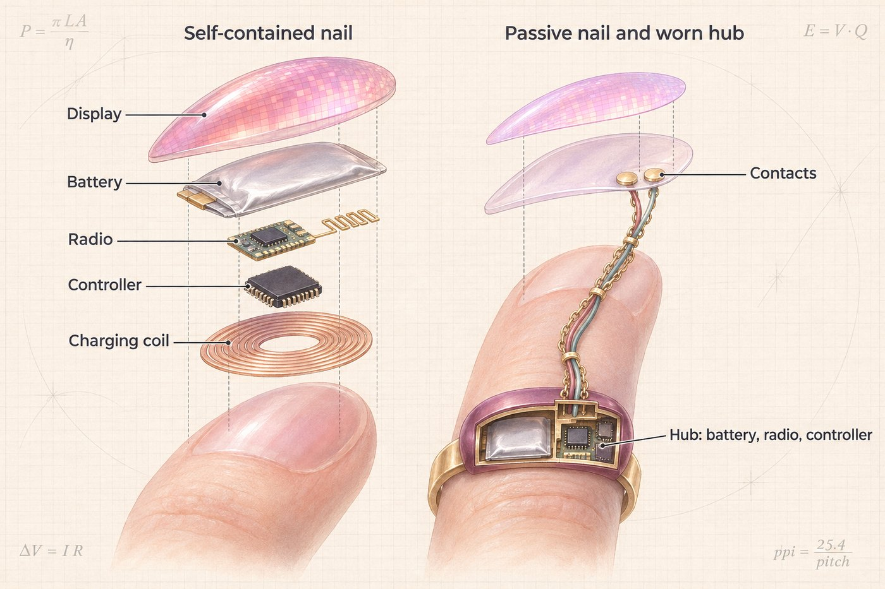
Nail unit. The nail unit is an artificial nail that carries a display facing outward and a set of electrical contacts, conveniently at the cuticle end (Figure 2). It may carry a small display driver or decoder that turns the incoming signal into the drive the display needs. It is passive in a strict sense: it holds no battery, capacitor bank or other energy store serving as a power source, and no radio or antenna, and it cannot work when disconnected. The display can be emissive (micro-LED, OLED, or individually addressable light-emitting pixels), bistable reflective electronic paper, or a liquid-crystal display, monochrome or colour, under a glossy protective overcoat. The nail can be any shape, including long or pointed, and may extend beyond the natural nail. It is held by adhesive, or without adhesive by a sleeve or cap over the fingertip, a ring around the fingertip, or a cradle attached to a finger ring. It may also come in two parts: a low base that stays on the nail and carries the contacts, and a display module that clips onto it.
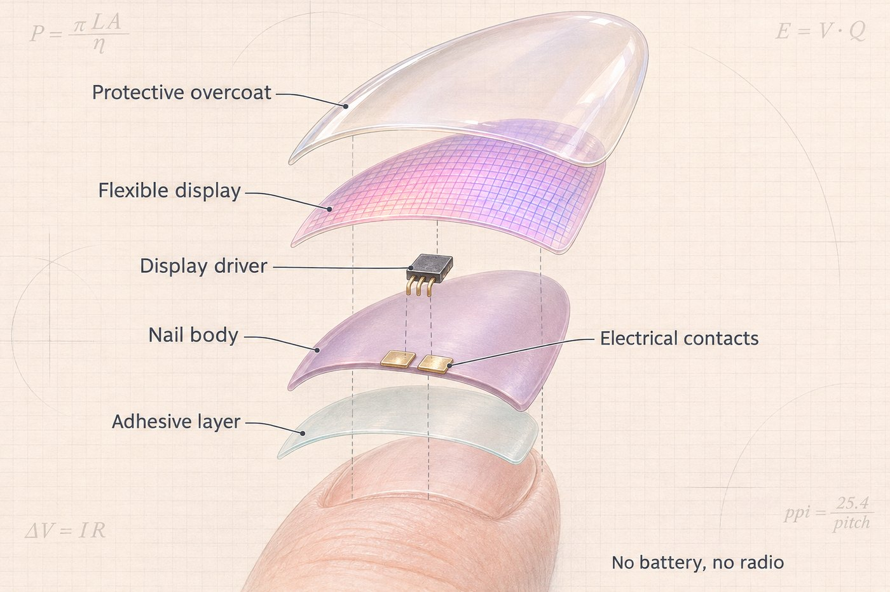
Hub. The hub holds a rechargeable battery, a wireless transceiver such as Bluetooth Low Energy that receives images from a phone, a controller that turns them into the display signal, a motion sensor, and optionally a vibration motor. It takes three forms (Figure 4). A single finger ring can hold all of it, ideally in a raised housing on top of the band like a signet or a gem setting, and drive the nail of the same finger; the thumb suits this well, because its nail is the largest and the ring sits close to it. A wrist band can fan a conductor to each nail of the hand and carry a larger battery charged through USB-C. Or the parts can be spread over several linked rings, for example the radio in one, the battery in a second and the controller in a third, each ring wired to its own nail.
Conductor. The conductor carries power and the display signal together. It can be a plain wire, strap, band or flexible printed cable. It can also be jewelry: fine insulated wires inside the bore of a hollow snake or rope chain whose metal body serves as the return and as a shield, which makes the pair coaxial; or two enamelled strands twisted together, the enamel both insulation and finish (Figure 3).
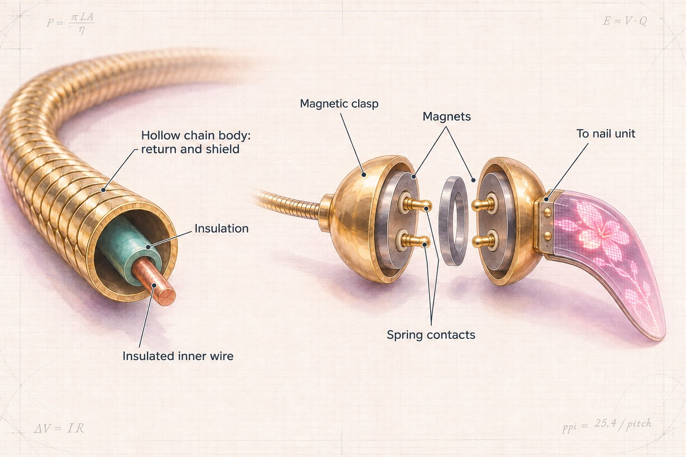
Connector. The conductor meets the nail through a releasable connector. In the main form it is a magnetic clasp dressed as a bead or charm: magnets pull the two halves together and align them, and gold-plated spring pins on the faces mate in the same motion. Two contacts suffice for a two-wire scheme, four or five for a serial display interface. Snap, slide, spring-clip and bayonet connectors serve the same role. Because the connector releases, a wearer who keeps the nails on for a week or two can take off the jewelry for showering, exercise or sleep and leave the nails in place.
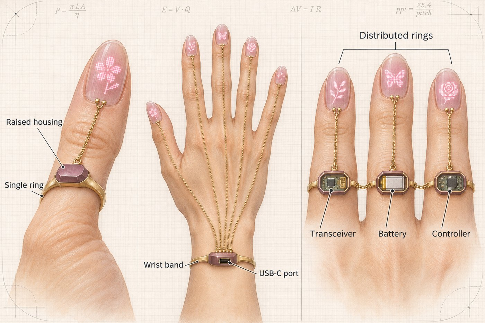
Signal schemes. The application describes three ways to carry power and image together (Figure 5). With two conductors, data is modulated onto the direct-current supply and recovered at the nail, and the chain body can be the return, so the visible jewelry holds a single inner wire. With three conductors (power, return and one data line), the nails are made of individually addressable pixels with built-in control, connected in a daisy chain so that one nail's data output feeds the next; the wire count does not grow with the number of nails. With five conductors, a standard serial display interface (clock, data, control, power and return) drives a raster display on each nail.
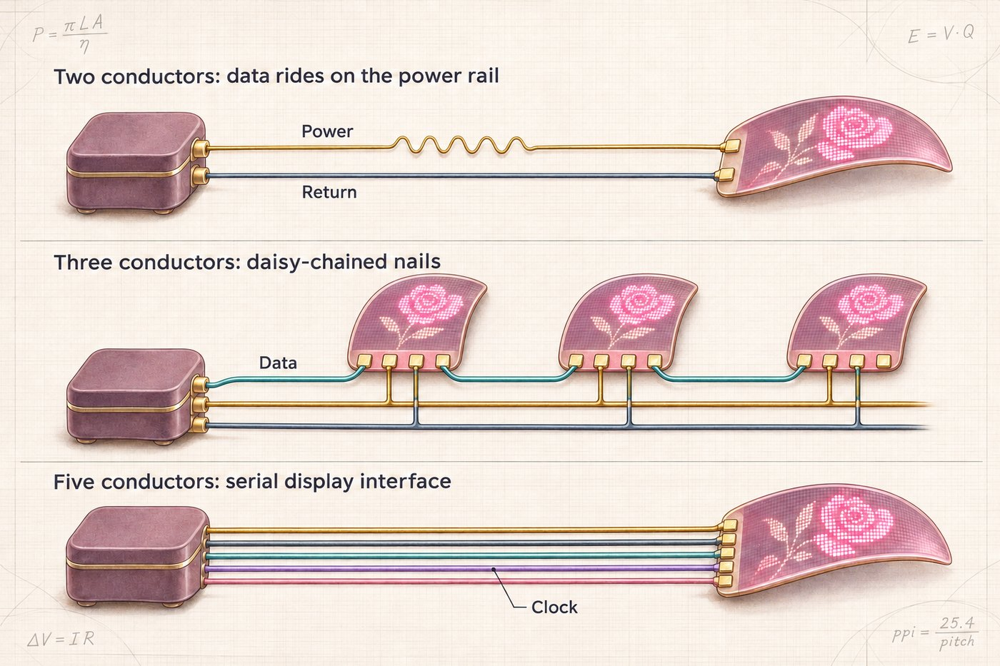
Operation. A phone app sends still images, patterns, animations, text or notifications to the hub. The controller prepares the display signal and sends it, with power, down the conductors. The motion sensor recognises gestures: raising and turning the hand wakes the displays, a twist advances, a pinch selects, a shake dismisses, and curling the fingers so the nails line up reveals one display that spans them. Content can also be stored in the hub and shown without a phone.
4. How much screen a nail holds
The display cannot cover the whole nail. We reserve a strip at the cuticle end for the contacts and driver, a narrow inactive border, and lose a little more to rounded corners. For a nail plate of width W and length L, a border m, a cuticle strip c and a corner factor ρ, the active area and the pixel count at pitch p are
We assume adult nail plates from 15 × 14 mm for the thumb to 9.5 × 10.5 mm for the little finger, m = 0.6 mm, c = 2.0 mm and ρ = 0.90. We compare three pitches: 1 mm, the size of the smallest common addressable-LED packages used in the daisy-chain scheme; 150 pixels per inch (ppi), typical of electronic paper; and 300 ppi, typical of a small high-resolution OLED or micro-LED panel [14].
| Nail | Plate (mm) | Active (mm) | Area (mm²) | 1 mm pixels | 150 ppi | 300 ppi | 300 ppi, extended nail |
|---|---|---|---|---|---|---|---|
| Thumb | 15.0 × 14.0 | 13.8 × 11.4 | 142 | 143 | 5,427 | 21,708 | 29,322 |
| Index | 12.0 × 12.5 | 10.8 × 9.9 | 96 | 90 | 3,654 | 14,732 | 20,828 |
| Middle | 12.5 × 13.5 | 11.3 × 10.9 | 111 | 110 | 4,224 | 17,024 | 23,275 |
| Ring | 11.5 × 12.5 | 10.3 × 9.9 | 92 | 90 | 3,480 | 14,036 | 19,844 |
| Little | 9.5 × 10.5 | 8.3 × 7.9 | 59 | 56 | 2,254 | 9,114 | 13,720 |
| One hand | 499 | 489 | 19,039 | 76,614 |
One hand offers about 5 cm² of display, a little less than a single postage stamp. The thumb alone has 2.4 times the area of the little finger, which supports the application's choice of the thumb for a single-ring product. At 300 ppi a thumbnail holds about 21,700 pixels, about a 162 × 134 image, enough for a detailed picture or a few words. A nail extended 4 mm past the fingertip, which the application allows, gains about a third more. At a 1 mm pitch the whole hand has fewer than 500 pixels: enough for coloured patterns and blocky letters, not for pictures (Figure 6).
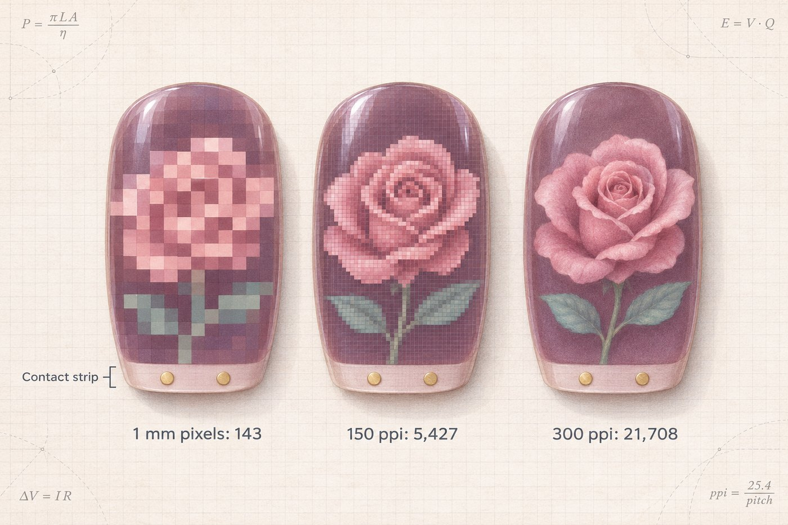
The model treats the nail as flat. Real nails curve across their width, so a display must bend to a radius of a few millimetres, and the curved surface holds slightly more area than its flat projection. Flexible OLED and electronic-paper films can bend this way; whether they survive the repeated flexing of daily wear is a question for testing, not for this model.
5. What a nail display draws
Emissive displays. An emissive display of active area A that shows a mean luminance Lv emits, if it radiates evenly in all forward directions, a luminous flux of π Lv A. Most images are not full white; the average picture level (APL) is the share of full white that the image shows on average. With a panel efficacy η, in lumens per watt, and a fixed overhead P0 for scanning and driving, the electrical power is
We assume η = 15 lm/W and P0 = 0.4 mW per nail, and three ways of using the display: glance, 300 cd/m² at APL 0.35, switched on 5% of the time by a gesture; ambient, 150 cd/m² at APL 0.25, always on; and showcase, 600 cd/m² at APL 0.5, always on. While on, a thumbnail draws 3.51 mW at glance brightness, 1.51 mW in ambient mode and 9.30 mW in showcase mode; an index nail draws 2.52, 1.16 and 6.45 mW, and a little-finger nail 1.70, 0.86 and 4.11 mW. Full white at 1,000 cd/m², an extreme case, takes the thumb to 30.1 mW.
Electronic paper. A bistable display uses energy only when its image changes. With an update energy Eu per unit area and f updates per hour,
We assume Eu = 4 mJ/cm², driver included. One update of the thumbnail then costs 5.7 mJ, and at 30 updates an hour the thumbnail draws 47 µW, the little finger 20 µW. That is 32 to 44 times less than the same nail emitting light in ambient mode. The price is speed and brightness: electronic paper takes a fraction of a second to change, which matters for the marquee in Section 10, and it shows nothing in the dark. Its advantage is that it stays readable in direct sun, where an emissive nail at a few hundred cd/m² washes out.
6. The battery budget
The hub pays for the nails and for itself. We assume it draws Ps = 0.3 mW in standby, with the radio connected, the motion sensor waiting for a gesture and the regulator running, and Pa = 1.5 mW more while the displays are on and the controller is rendering. For a share of time on d and nails drawing Pi, the mean power and the hours from a battery of rated energy Eb are
where u = 0.85 is the share of the battery used before recharging and κ = 0.85 the regulator efficiency. We assume a ring with a raised housing holds 0.15 Wh (about 40 mAh at 3.7 V) and a wrist band 1.5 Wh (about 400 mAh). Both figures are assumptions, not the capacities of any product.
| Hub and nails | Glance (5% on) | Ambient (always on) | Showcase (always on) | Electronic paper, 30 updates/h |
|---|---|---|---|---|
| Thumb ring, one nail | 0.55 mW · 197 h | 3.31 mW · 33 h | 11.10 mW · 10 h | 0.37 mW · 12 days |
| Ring hub, five nails | 1.02 mW · 106 h | 7.72 mW · 14 h | 35.18 mW · 3 h | 0.59 mW · 8 days |
| Bracelet, five nails | 1.02 mW · 1,058 h | 7.72 mW · 140 h | 35.18 mW · 31 h | 0.59 mW · 76 days |
Three results stand out (Figure 7). First, the wrist band is comfortable in every mode: five always-on nails at ambient brightness run for 140 hours, about 8.8 days of 16 waking hours, and even showcase brightness lasts 31 hours. Second, the single thumb ring works: one always-on thumbnail runs for 33 hours, two worn days. Third, a single ring driving all five nails does not last a day if they stay lit: 14 hours in ambient mode, under the 16-hour day we assume, and 3 hours at showcase brightness. The application states that the hub's battery "supports bright, continuous, all-day operation". The model supports that for a wrist band, and for a ring driving one nail. It does not support it for a ring driving a whole hand at more than ambient brightness. That configuration has to rely on the gesture-driven glance mode, or on electronic paper.
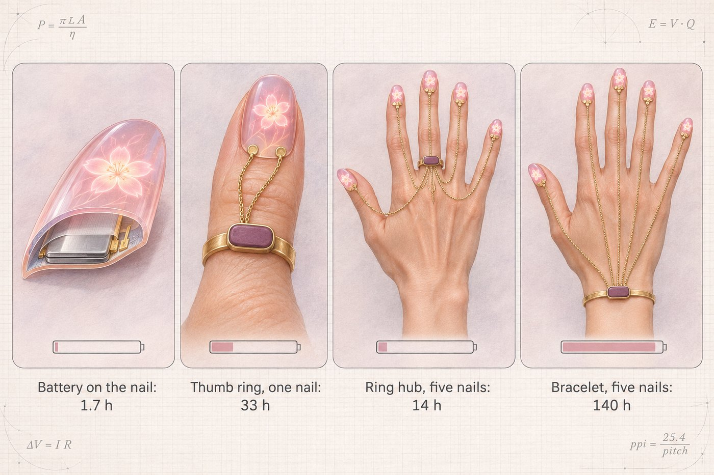
The glance mode is what makes a ring hub practical. Waking the displays only when the hand is raised turns 14 hours into 106. The sensitivity is steep: with five nails at 300 cd/m², a ring lasts 184 hours if the nails are lit 2% of the time, 106 hours at 5%, 62 hours at 10%, 28 hours at 25%, 14 hours at 50%, and 7 hours if they never turn off. How often people would actually raise their hands to look is unknown, and it decides the result.
The very long figures for electronic paper and the glance mode on a bracelet (76 days, 1,058 hours) say only that standby power dominates. The model does not include battery self-discharge, which at those time scales would matter, and a 0.3 mW standby is itself an assumption.
7. Why the battery leaves the nail
The central design choice is to take the battery off the nail. The model lets us compare the alternative directly. A cell of 1 cm² and 0.35 mm, which is about the most that hides under a thumbnail, at an assumed 150 Wh/L for a thin pouch cell including its packaging [16], holds 5.25 mWh. The ring battery holds 29 times as much and the wrist band 286 times. The self-contained nail must also run its own radio and controller, which we take as 0.1 mW connected and 0.6 mW more while displaying, by analogy with the hub.
| Measure | Self-contained nail | Passive nail, thumb ring |
|---|---|---|
| Energy available | 5.25 mWh | 150 mWh (29×) |
| Glance (5% on) | 0.31 mW · 12.4 h | 0.55 mW · 197 h |
| Ambient, always on | 2.21 mW · 1.7 h | 3.31 mW · 33 h |
| Showcase, always on | 10.00 mW · 0.4 h | 11.10 mW · 10 h |
| Electronic paper, 30 updates/h | 0.157 mW · 24 h | 0.37 mW · 12 days |
| Thickness of the nail stack | 1.25 mm | 0.65 mm (emissive), 0.70 mm (e-paper) |
| Mass of a thumb unit | 0.34 g | 0.17 g (emissive), 0.19 g (e-paper) |
| Things to charge, ten nails | Ten | One or two hubs |
For an emissive display the comparison is decisive. A self-contained nail lit continuously at ambient brightness lasts 1.7 hours, and at showcase brightness 24 minutes. Even the glance mode gives it only half a day. The passive nail on a thumb ring runs the same display for 33 hours.
For electronic paper the comparison is closer, and it should be stated plainly. A self-contained e-paper nail updating 30 times an hour lasts about a day on its own cell, because the display needs almost nothing and the radio dominates. That is short but not absurd, which is presumably why self-contained e-paper nails have been proposed [4]. For electronic paper the case for the passive nail rests less on hours of use and more on what the battery costs in thickness, mass and charging: ten cells to charge every day against one hub, and a nail stack twice as thick.
The thickness figures come from an assumed stack of layers (Figure 8). A passive emissive nail (adhesive 0.10 mm, nail body 0.25 mm, flexible OLED with its polarizer 0.20 mm, overcoat 0.10 mm) comes to 0.65 mm, close to an assumed 0.60 mm press-on nail and 0.50 mm gel overlay. A passive electronic-paper nail comes to 0.70 mm. Adding a 0.35 mm battery and a 0.25 mm layer for the radio, controller and antenna takes the self-contained nail to 1.25 mm, roughly double. At about 0.17 g, a passive thumb unit weighs about the same as a press-on nail.
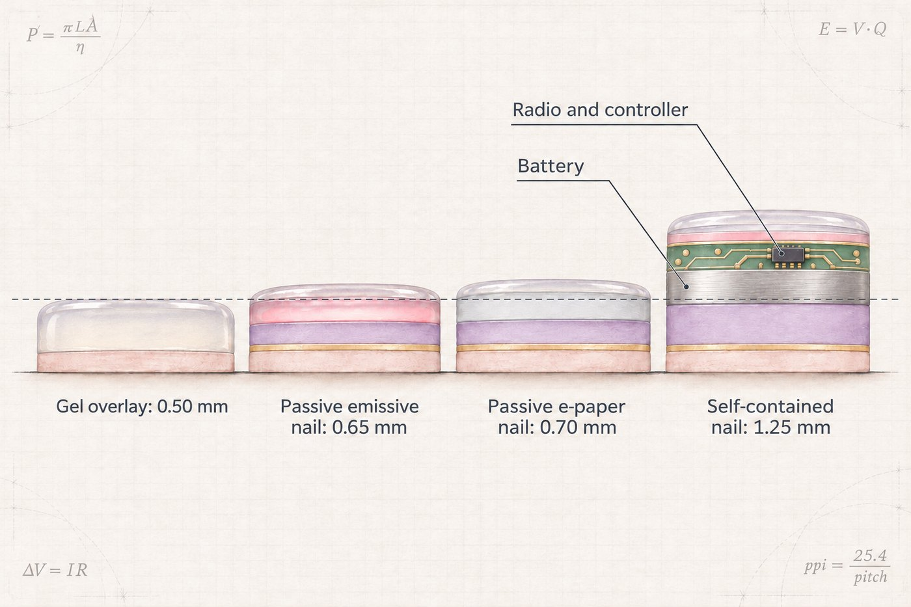
8. The conductor
Moving the battery off the nail is only worthwhile if the conductor that replaces it is cheap in power and clean in signal. The application states that at these lengths the limiting factor is voltage drop and that resistive losses are negligible. The model checks both.
Drop and loss. A current I through a run of length ℓ, with an inner copper wire of diameter d and resistivity ρCu and a return of resistance Rr per metre, loses
We assume a 0.08 mm inner wire, about 40 AWG, which has 3.42 Ω/m, and a chain-body return of 1.0 Ω/m, allowing for the contacts between links. The run is 4 cm from a thumb ring to the thumbnail and 20 cm from the wrist to the farthest fingertip, at a 3.3 V supply. A thumbnail at glance brightness draws 1.1 mA and loses 0.2 mV; at full white and 1,000 cd/m², 9.1 mA and 1.6 mV. A middle-finger nail at showcase brightness, fed from the wrist, loses 2.0 mV. The worst case, all five nails at full white sharing one pair from the wrist as in a daisy chain, draws 32.3 mA and loses 28.6 mV, under 1% of the power. The application's statement holds with a wide margin. Even a fine decorative wire is far thicker than these currents need; the practical limits on the conductor are mechanical: flex fatigue, snagging and the contact resistance of a clasp that gets wet and dirty.
Signal timing. A wire behaves as a simple connection, with no reflections to worry about, when it is short compared with the distance a signal edge travels while rising. A common rule of thumb puts the limit at one sixth of that distance:
With a signal speed v of 0.6 times the speed of light in fine insulated wire, a 2 ns edge gives ℓc = 6.0 cm, a 5 ns edge 15.0 cm, and a 20 ns edge 60.0 cm. The 4 cm thumb run is short for any ordinary logic. The 20 cm wrist run is short only if the edges are slowed to around 7 ns or more, which a series resistor at the driver does cheaply. The application says that serial interfaces work with ample signal integrity over these lengths; the model agrees for the ring and adds this condition for the wrist band.
9. Data: radio, wire and daisy chain
A display needs a pixel stream. For n pixels at b bits each and F frames per second the raw rate is
We compare it with an assumed 1 Mbit/s of usable Bluetooth Low Energy throughput between phone and hub [17] and a 20 Mbit/s serial link on each nail's conductor.
| Case | Rate needed | Share of one nail's 20 Mbit/s conductor link | Multiple of the radio |
|---|---|---|---|
| Thumb, 150 ppi | 2.6 Mbit/s | 13% | |
| Thumb, 300 ppi | 10.4 Mbit/s | 52% | |
| One hand, 150 ppi | 9.1 Mbit/s | (one link per nail) | 9× |
| One hand, 300 ppi | 36.8 Mbit/s | (one link per nail) | 37× |
| Daisy chain, 1 mm pixels, 24-bit | 800 kbit/s carries 1,111 pixels at 30 fps | 489 pixels on the hand refresh at 68 fps | |
Two conclusions follow. The conductor is not the bottleneck: each nail's own link carries even a 300 ppi video stream with room to spare. The radio is. Live video for one hand would need 9 to 37 times what Bluetooth Low Energy delivers. A phone cannot stream frames to the nails; it must send still images, which take about 1.2 s for a full 300 ppi hand (150 KiB), and animations must be stored in the hub's memory or generated there from a compact description. The application already allows content to be pre-stored in the hub. The model says that for animation this is not an option but a requirement.
The daisy chain. The three-conductor scheme suits strings of addressable LEDs whose pixels each contain a small controller and pass data to the next. A common single-wire protocol of this kind runs at 800 kbit/s with 24 bits per pixel, which refreshes the hand's 489 one-millimetre pixels 68 times a second, comfortably fast. The problem is power. Each such pixel keeps its controller running even when dark. If each draws 1 mW at idle (about 0.3 mA at 3.3 V; an assumption, since parts differ), the hand's pixels spend 489 mW doing nothing, 125 times the 3.9 mW the light costs in ambient mode, and a 1.5 Wh band lasts 2.2 hours; a ring, 0.2 hours. At 0.1 mW per pixel the band lasts 19.8 hours; at 0.3 mW, 7.1; at 3 mW, 0.7. The daisy chain is the simplest wiring and the coarsest display, and with ordinary addressable LEDs it is also the most power-hungry. It suits a bracelet worn for an evening, not all day, unless pixels with very low idle current are used or the chain's supply is switched off between frames of a static pattern.
10. One display across four nails
The application's spanning display appears when the wearer turns the palm toward the face and curls the fingers so that the four fingernails line up side by side, within about 15 degrees of a common plane. The controller then splits one image or one line of text into four parts and scrolls it across the nails as a marquee (Figure 9). Because one controller drives all four nails over wires, they are synchronised by construction.
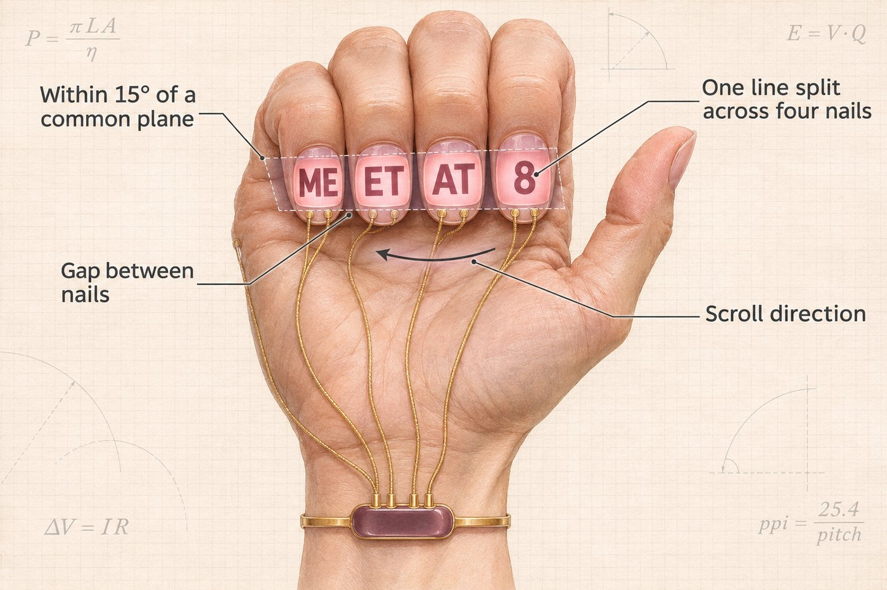
How much text fits. With the nail widths of Table 2, the four lit areas add up to 40.7 mm. Between them lie three gaps of skin and inactive border, 11.1 mm in all, so the marquee spans 51.8 mm of which 21% is dark. The shortest active length, the little finger's, is 7.9 mm, which caps the letter height. On a raster display we assume letters 6.0 mm tall in a font whose characters advance 6/7 of their height. On 1 mm addressable pixels the smallest legible font, 5 × 7 pixels with one column of spacing, makes letters 7.0 mm tall that advance 6 mm. Seen from 35 cm, these letters subtend 0.98 and 1.15 degrees, well above what normal reading needs. About 10.1 characters fit across the span on the raster display and 8.6 on the LED string. Scrolling at 8 characters a second, each character stays in view for 1.3 and 1.1 seconds respectively. That is enough for a short message, a name or a time, not for a sentence.
The gaps. At any moment about a fifth of the line falls on skin. Because the text moves, every character crosses the lit areas, but a reader sees letters vanish and reappear. Whether that is readable or annoying is a perception question the model cannot settle.
Electronic paper. At an assumed 0.3 s per partial update, electronic paper manages 3.3 steps a second. To scroll at 8 characters a second it would have to jump 2.4 characters at each step, which no longer reads as motion. A smooth marquee needs an emissive display; on electronic paper the spanning display works for a still image or a slow page-by-page change.
Alignment. A nail tilted 15 degrees away from the common plane looks 3.4% narrower than one facing the eye squarely, too small to matter for the image.
11. Gestures, alerts and heat
Gestures. The motion sensor sits in the hub, not on the nail, so it can run continuously from the hub's battery and wake the controller only when it recognises a movement (Figure 10). The gesture set in the application is: raise and turn the hand to wake the displays, twist the wrist to step forward or back, pinch or tap to select, shake to dismiss, and curl the fingers to reveal the marquee. Gestures can also answer or decline a call signalled by the phone. The power model includes the sensor in the hub's 0.3 mW standby. The model says nothing about recognition accuracy or false wakes, and false wakes matter: every one lights the nails and spends glance-mode energy.
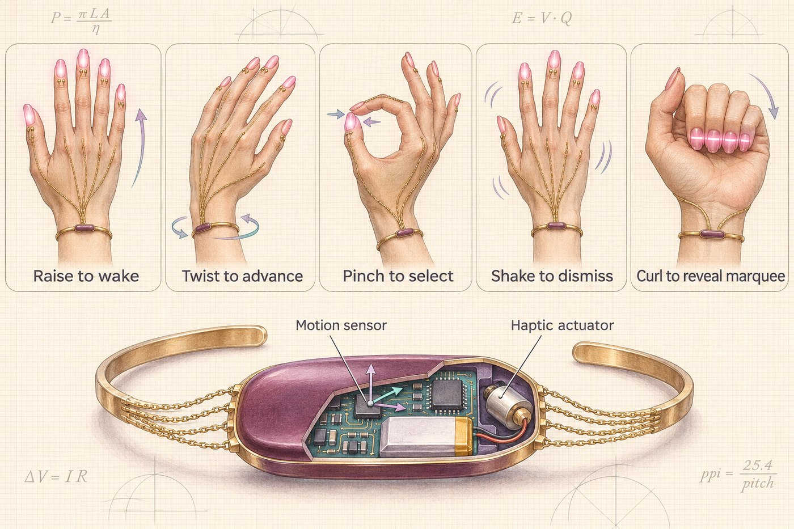
Alerts. A vibration motor in a ring or the band buzzes when a message or call arrives, and confirms that a gesture registered. It may sit in one ring, be spread over several, or sit in the band. The model does not price it, because its energy depends entirely on how many notifications arrive.
Heat. An emissive display turns nearly all of its power into heat at the nail. With a heat flux q = P/A, heat leaves outward to the air with a coefficient hout and inward through the nail stack (resistance Rs) into the blood-perfused fingertip (coefficient ht). The rise in surface temperature is
With assumed values hout = 15 W/m²K, Rs = 0.0035 m²K/W (0.7 mm at 0.2 W/mK) and ht = 100 W/m²K, a thumbnail at glance brightness (25 W/m²) warms by 0.28 °C, at showcase brightness (66 W/m²) by 0.74 °C, and at full white and 1,000 cd/m² (212 W/m²) by 2.38 °C. A nail display is not a heat problem at any realistic brightness, because there is so little power to dissipate. The hub's electronics dissipate a few milliwatts; spreading them over several rings, as the application allows, spreads bulk more than heat.
12. Limitations and evaluation plan
This is a design and analysis paper. Its limits should be plain.
No prototype. No nail unit, hub, jewelry conductor or clasp of this kind has been built. Every number above is modelled.
Efficacy and overhead are uncertain. Panel efficacy for tiny flexible emissive displays, and their fixed driving overhead, are assumptions. Table 6 shows how much the bracelet's always-on figure moves with them.
| Efficacy | 150 cd/m² | 300 cd/m² | 600 cd/m² |
|---|---|---|---|
| 8 lm/W | 77 h | 44 h | 24 h |
| 15 lm/W (base) | 117 h | 73 h | 42 h |
| 30 lm/W | 166 h | 117 h | 73 h |
Even the pessimistic corner, 8 lm/W at 600 cd/m², gives a wrist band a full day. The ring's figures scale down by a factor of ten in every cell.
A ring cannot light a whole hand all day. Table 3 shows a ring driving five always-on nails falls short of a 16-hour day. The ring hub depends on the gesture-driven glance mode, on electronic paper, or on driving only the thumb.
The radio cannot stream video. Animations must live in the hub. How large a library of animations the hub must store, and how much controller power generating them costs, is not modelled.
The daisy chain is power-hungry. With ordinary addressable LEDs, idle draw dominates. The scheme needs low-idle parts or a switched supply.
Durability is not modelled. Flexing a display on a curved nail, the life of contacts that get wet, the strength of fine wire under daily wear, and snagging are the likely failure points, and none is covered by an electrical model.
Use is not modelled. How often wearers raise their hands, how they feel about visible chains, and whether the marquee's gaps are acceptable are questions for people, not equations.
The tests that would settle these questions, in order of cost:
| Stage | Test | Question answered |
|---|---|---|
| 1. Bench power | Small flexible OLED and e-paper panels cut to nail size, driven from a bench supply at the brightness and update rates of Section 5 | What are the real efficacy, overhead and update energy? |
| 2. Conductor and clasp | Wire-in-chain conductors and magnetic clasps under flex cycling, sweat and water, measuring resistance and signal edges | Do drop and timing stay as modelled? How long do contacts and wire last? |
| 3. Thumb ring | One passive thumbnail on a ring hub worn for a week, logging battery use and display time | Does the single-ring product reach two worn days? What is the real share of time on? |
| 4. Full hand | A wrist band driving five nails over each of the three signal schemes | Which scheme is practical? What does the daisy chain really draw at idle? |
| 5. Gestures and marquee | Gesture recognition with false-wake logging; marquee readability with users at several scroll speeds | How often do false wakes spend energy? Is text across the gaps readable? |
| 6. Wear study | Users wearing the system for two weeks with releasable jewelry | Comfort, snagging, removal for water and sleep, and appeal |
13. Conclusion
A display on a fingernail has been held back by what has to sit beside it. The system described here keeps only the display and its contacts on the nail and moves the battery, the radio and the controller into a ring or a bracelet, joined to the nail by a conductor that can be worn as jewelry and that carries both power and image.
The model finds that this is sound where it matters most. A ring holds about 29 times the energy of a cell that fits under a nail, and a bracelet about 286 times; a passive thumbnail on a ring runs always-on for 33 hours where a self-contained one runs for 1.7. The conductor costs almost nothing in power, the nail stays about as thin as a press-on nail, and it does not warm noticeably. The model also finds the limits plainly. A ring cannot keep a whole hand lit all day; the radio cannot stream video, so animation must live in the hub; ordinary addressable-LED strings waste most of their power at idle; and electronic paper, the frugal choice, cannot scroll a smooth marquee.
The idea therefore looks best as a thumb ring with one emissive nail, or as a bracelet driving a hand of raster displays, with stored animations and a gesture-driven glance mode. What remains is to measure real panels and conductors on the bench, and then to build one and wear it.
The model is short and is published with this paper as model.py, so the assumptions can be changed and every table regenerated.
References
- C.-H. Su, L. Chan, C.-T. Weng, R.-H. Liang, K.-Y. Cheng and B.-Y. Chen, "NailDisplay: bringing an always available visual display to fingertips," in Proc. CHI 2013, ACM, pp. 1461–1464, 2013. doi:10.1145/2470654.2466193
- C. Dierk, T. Vega Gálvez and E. Paulos, "AlterNail," in Proc. CHI 2017, ACM, pp. 6754–6759, 2017. doi:10.1145/3025453.3025924
- C. Dierk, M. J. P. Nicholas and E. Paulos, "AlterWear: Battery-Free Wearable Displays for Opportunistic Interactions," in Proc. CHI 2018, ACM, pp. 1–11, 2018. doi:10.1145/3173574.3173794
- Q. Hakeem and T. Woods (Q-Tee Product Design LLC), "Artificial nails with displays," WO 2015/106143 A1, 2015. patents.google.com/patent/WO2015106143A1
- M. Magnusson and S. Magnusson, "Electronic fingernail display," U.S. Patent 11,452,354 B1, 2022. patents.google.com/patent/US11452354B1
- G. A. Piccionelli, "Finger computer display and controller device," U.S. Patent 9,996,170 B2, 2018. patents.google.com/patent/US9996170B2
- T. Schneider and D. Chaney (Kent Displays), "Color changing artificial fingernails," U.S. Patent 8,176,924 B2, 2012. patents.google.com/patent/US8176924B2
- M. Koibuchi (Nailtron Co., Ltd.), "Output device for attached nail and program," Japanese Patent JP 6740000 B2, 2020. patents.google.com/patent/JP6740000B2
- R. K. McCullough, "Method for powering remote visual displays and allowing for data exchange over the same wire pair," U.S. Patent 4,992,774 A, 1991. patents.google.com/patent/US4992774A
- E. Jacobs and M. Botha, "LED charm bracelet," U.S. Patent 10,278,461 B2, 2019. patents.google.com/patent/US10278461B2
- T. L. Owens and H. Y. Pang (Tectus Corp.), "Power generation necklaces with field shaping systems," U.S. Patent 10,790,700 B2, 2020. patents.google.com/patent/US10790700B2
- H.-L. Kao, A. Dementyev, J. A. Paradiso and C. Schmandt, "NailO: Fingernails as an Input Surface," in Proc. CHI 2015, ACM, 2015. doi:10.1145/2702123.2702572
- K. Sakuma, A. Abrami, G. Blumrosen, S. Lukashov, R. Narayanan, J. W. Ligman, V. Caggiano and S. J. Heisig, "Wearable nail deformation sensing for behavioral and biomechanical monitoring and human-computer interaction," Scientific Reports, vol. 8, 18031, 2018. doi:10.1038/s41598-018-36834-x
- Y. Huang, E.-L. Hsiang, M.-Y. Deng and S.-T. Wu, "Mini-LED, Micro-LED and OLED displays: present status and future perspectives," Light: Science & Applications, vol. 9, 105, 2020. doi:10.1038/s41377-020-0341-9
- B. Comiskey, J. D. Albert, H. Yoshizawa and J. Jacobson, "An electrophoretic ink for all-printed reflective electronic displays," Nature, vol. 394, pp. 253–255, 1998. doi:10.1038/28349
- G. Zhou, F. Li and H.-M. Cheng, "Progress in flexible lithium batteries and future prospects," Energy & Environmental Science, vol. 7, no. 4, pp. 1307–1338, 2014. doi:10.1039/c3ee43182g
- C. Gomez, J. Oller and J. Paradells, "Overview and evaluation of Bluetooth Low Energy: an emerging low-power wireless technology," Sensors, vol. 12, no. 9, pp. 11734–11753, 2012. doi:10.3390/s120911734
- B. Goldstein, "Touch Input for Passive Fingernail Displays via Hub-Side Capacitive Sensing Over a Shared Power-and-Data Jewelry Conductor," Technical Disclosure Commons, Defensive Publications Series, July 6, 2026. tdcommons.org/dpubs_series/10802
How to cite
B. Goldstein, "The Nail That Carries No Battery: Passive Fingernail Displays Powered and Driven Through Jewelry," Benny Labs Foundation working paper, November 2026. https://doi.org/10.5281/zenodo.24546561